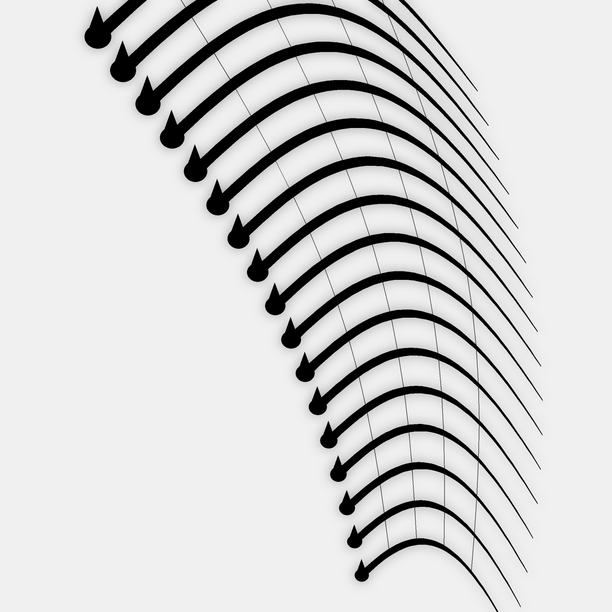
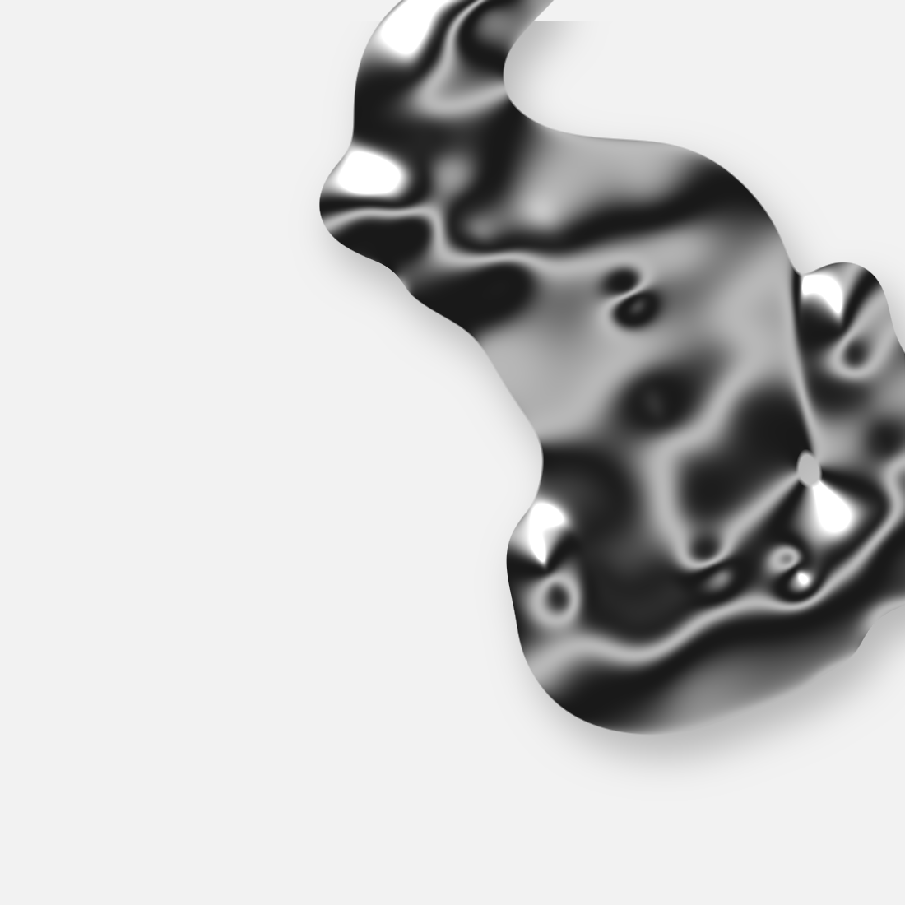

pixel lace — study 01
Dream Lace
contents
01
soft machines
p. 03
02
pressed flowers
p. 04
03
small squares
p. 05
04
afterglow
p. 06

02 — pressed flowers
pressed
flowers
图被切成小方格,只在花纹里露出来。其余的部分让给白色。
everything soft is made of small squares.
— placeholder quote

03 — small squares
veil
thank you
pixel lace — study 01